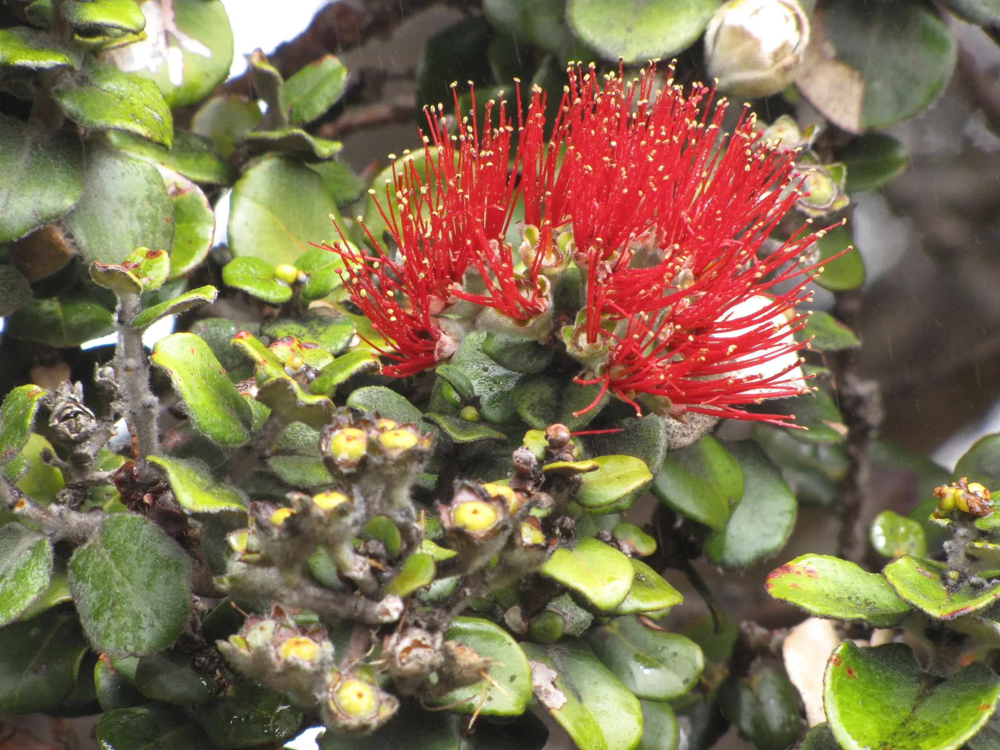

About
Ecology, molecules, and biodiversity change
Photo: Forest & Kim Starr · CC BY 3.0 US · cropped
I am Sven Weber, a postdoctoral researcher in the EVOLAB at UC Berkeley. My work focuses on molecular ecology, environmental DNA, metabarcoding, arthropod biodiversity, and ecological change. I am currently supported by a DFG Walter Benjamin Postdoctoral Fellowship to study long-term biodiversity change, plant-arthropod interaction networks, and ecological patterns across the Hawaiian archipelago.
My path into molecular ecology started with a broad interest in biodiversity, evolution, and field biology. During my BSc in Biology at Heinrich Heine University Düsseldorf, I worked on plant genetics, heavy metal soils, population structure, and molecular lab methods. For my MSc in Biology at Heinrich Heine University Düsseldorf, I completed my thesis at RWTH Aachen, comparing spider communities across habitats and historical sampling periods and strengthening my focus on community ecology, field surveys, and multivariate statistics.
During my PhD at Trier University in the Krehenwinkel Lab, I worked on metabarcoding natural environmental DNA samplers for retrospective biodiversity monitoring. This included DNA from spider gut contents, mussels and other filter feeders, plant material, leaves, and museum-derived samples such as herbarium specimens.
Since joining UC Berkeley, I have worked on eDNA-based approaches for early detection of invasive arthropods, Hawaiian forest biodiversity, adaptive radiations of spiders on Pacific islands, and reference database development for Hawaiian taxa. I enjoy research that combines muddy boots, careful lab work, bioinformatics, and ecological interpretation.
Outside research, I enjoy exercise, nature photography, dogs, travel, and games.